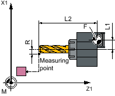
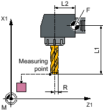
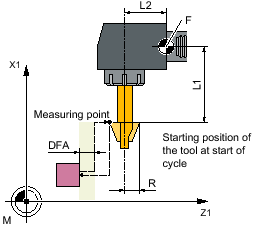
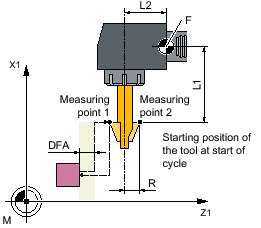
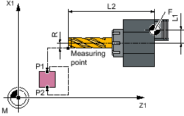
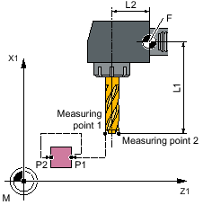
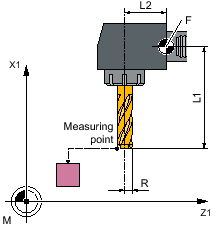

Function
This measuring version can be used to measure a milling tool on a turning machine (lathe).
The following measurements can be performed:
-
Length
-
Radius
-
Length and radius
The measuring cycle checks whether the difference to be corrected with respect to the old tool length or to the old tool radius lies within a defined tolerance range:
-
Upper limits: Safe area TSA and dimensional difference control DIF.
-
Lower limit: Zero offset range TZL.
If this range is not violated, the new tool length is accepted in the tool offset, otherwise an alarm is output. Violation of the lower limit is not corrected.
The tool length correction is is realized depending on the particular turning machine (lathe). The length assignment (L1 in X, L2 in Y) to the geometry axes is realized just the same as for a turning tool.
Measuring principle
For a "complete" measurement, all measured variables that can be determined (lengths L1 and L2 and radius) are determined. In both axes (for G18: Z and X) of the plane, probing action is performed with respect to the probe, whereby the measurement starts with the first axis of the plane (for G18: Z).
For an "axis-by-axis" measurement, the measured variables are measured corresponding to the selection "only length (L1 or L2)", "only radius" or "length (L1 or L2) and radius" only in the parameterized measuring axis of the active plane.
Measuring "axis-by-axis" - only length (L1 or L2)
Length L1 or L2 is measured in the parameterized measuring axis.
Without milling tool reversal | With milling tool reversal | |
|---|---|---|
|  Measuring length L2 |  Measuring length L1 |  Measuring length L2 Requirement: Radius R must be known. |
Measuring "axis-by-axis" - only radius
The radius in the parameterized measuring axis is measured. When measuring with reversal, measuring point 1 in the selected axis and milling spindle position is measured, the tool is then turned through 180 ° and measured again. The average value is the measured value.
Without milling tool reversal | With milling tool reversal |
|---|---|
|  |  |
Measuring "axis-by-axis" - only length (L1 or L2) and radius
Length L1 or L2 and radius are measured in the parameterized measuring axis by probing twice to two different sides of the measuring probe.
Length L1 and radius measurement without milling tool reversal | Length L2 and radius measurement with milling tool reversal |
|---|---|
|  |  |
Measuring "complete" - lengths (L1 and L2) and radius
For complete measurements, all offsets are determined:
Both lengths and radius (four measurements).
If the radius is specified to be 0, then both lengths are determined (two measurements).
The measuring cycle generates the approach blocks for the probe and the traversing motions for measuring length 1, length 2 and the radius. This is conditional on a correctly selected starting position.
Milling tool reversal
When measuring with reversal, to start, the measuring point in the selected axis and a milling spindle position according to starting angle SPOS is measured. Then the tool (spindle) is turned through 180 degrees and measured again.
The average value is the measured value. Measurement with reversal, results in a second measurement at each measuring point with a spindle rotation through 180 degrees with respect to the starting angle. The offset angle entered in SCOR is summed to these 180 degrees. This means that a specific 2nd milling cutting edge can be selected that is not exactly 180 degrees offset from the 1st cutting edge. Measurement with reversal permits measurement of two cutting edges of one tool. The mean value is the offset value.
Tool position
Axial position | Radial position |
|---|---|
| Milling cutter radius in the 2nd measuring axis (for G18: X) |  Milling cutter radius in the 1st measuring axis (for G18: Z) |
Measurement with rotating/stationary spindle
Measurement is possible with a rotating (M3, M4) or with a stationary milling spindle (M5).
If the milling spindle is stationary, at the beginning it is positioned at the specified starting angle SPOS.
| Note |
Measurement with rotating spindleIf selection of a specific milling tool cutting edge is not possible, it is possible to measure with a rotating spindle. The user must then program the direction of rotation, speed, and feedrate very carefully before calling up CYCLE982 to prevent damage to the probe. A low speed and feedrate must be selected. |
Empirical values may optionally be included. A mean value is not calculated.
Preconditions
The tool probe must be calibrated, see Calibrate probe (CYCLE982).
The approximate tool dimensions must be entered in the tool offset data:
Tool type: 1xy (milling tool)
Radius, length 1, length 2.
The tool to be measured must be active with its tool offset values when the cycle is called.
For the milling tool, the channel-specific SD42950: $SC_TOOL_LENGTH_TYPE = 2 must be set (length calculation just the same as for a turning tool).
The tool spindle must be declared as the master spindle.
Starting position before the measurement
From the starting position, collision-free approach to the probe must be possible.
The initial positions are located outside the unauthorized area (see the diagram below).

① to ④ | permissible area |
Measure milling cutter: Possible starting positions in the 2nd axis of the plane (for G18: X)
Position after the end of the measuring cycle
For an "axis-by-axis" measurement, the tool tip is positioned at the measurement path distance away from the last probed measuring surface of the probe.
For a "complete" measurement, after the measurement, the tool is positioned at the starting point before the cycle was called.